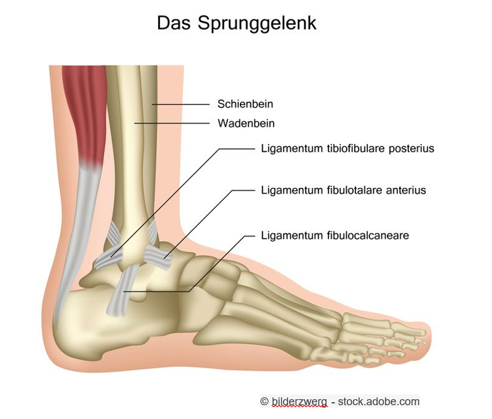

Das Sprunggelenk funktioniert wie ein Stossdämpfer für den Körper. Es besteht aus einem oberen Sprunggelenk und einem unteren Sprunggelenk. Das obere Sprunggelenk ist verantwortlich für die Auf- und Abwärtsbewegung, während das untere Sprunggelenk für die Seitwärtsbewegung zuständig ist. Beim Sprunggelenk treffen 3 Knochen aufeinander. Das Schienbein (lat. Tibia), das Wadenbein (lat. Fibula) und das Sprungbein (lat. Talus). Fixiert und gesichert wird das Gelenk durch das Aussenband, das Innenband und die Syndesmose.

Verletzungen an den Bändern geschehen meistens beim Landen nach einem Sprung oder bei schnellen Bewegungen, wenn der Fuss umknickt. Dies führt zu einer grossen Krafteinwirkung auf die Bänder. Je nachdem, wie stark die Krafteinwirkung auf die Bänder ist, führt es zu unterschiedlich schweren Verletzungen. Zwischen einer Überdehnung der Bänder und einem Riss in allen Bändern ist vieles möglich. Wenn die Bänder nicht nachgeben, kann es auch zu einem Wadenbeinbruch kommen, denn die Kraft wird dann einfach auf die Knochen übertragen. Dies geschieht allerdings selten. Die Diagnose für solche Verletzungen ist schwierig. Die Schmerzen oder die Schwellung stimmen nämlich nicht unbedingt mit der Schwere der Verletzung überein. Eine Überdehnung schmerzt manchmal mehr als ein angerissenes Band. Aber anhand von Röntgenaufnahmen kann man aber erkennen, wenn ein oder mehrere Bänder gerissen sind. Je gravierender die Verletzung, desto weiter kann man das Gelenk aufklappen.
Bei einer möglichen Bänderverletzung kann man sich an der PECH-Regel orientieren. P für Pause, mit der Aktivität aufhören. E für Eis, mit Eis die das Fussgelenk kühlen, um das Anschwellen abzuschwächen. C für Compression. Durch Druck die Blutzufuhr verringern und so das Anschwellen zu reduzieren. Und H für Hochlagern, damit kann man auch eine stärkere Schwellung verhindern. Nach dieser Ersten Hilfe gibt es zwei verschiedene Behandlungsmethoden. Die konservative und die operative Variante. Bei der Konservativen Variante muss man die nächsten 6 Wochen eine Schiene tragen, um das Gelenk zu stabilisieren. Diese Variante wird in den meisten Fällen angewandt. In Ausnahmefällen kommt die operative Behandlung zum Zuge. Beispielsweise wenn durch frühere Verletzungen das Band bereits instabil ist, oder wenn es auch noch sonstige Verletzungen gibt (Knochenbruch). Nach der Operation darf das Gelenk nicht belastet werden und wird durch eine Gipsschiene geschützt. Danach folgt eine normale Schiene .